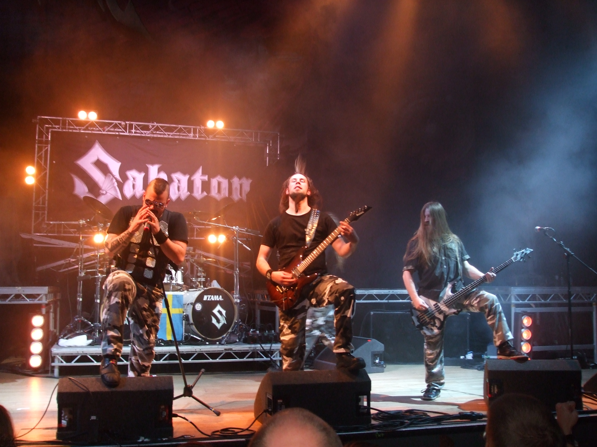

Introduction
Content
Elias webbsite about Sabaton is the product of a schooltask in the spring 2021. To make the webbsite I used HTML and CSS with Caret on a cromebook. Because of the lack of any backside-programing the study does not work but every other page functions properly and I hope it will be usefull. Note that english is not my first language so the spelling might be flawed.
The Bandmembers page contains some band history and a table with information about the bandmembers. The Music page contains the translation of the swedish song titles and their pronounciation. On the Music page one can go to the study and the result page that lack some features.
